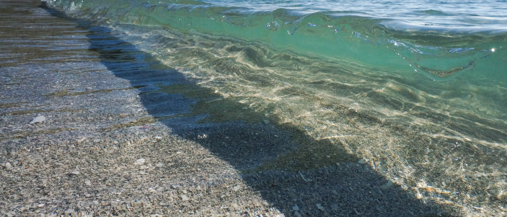
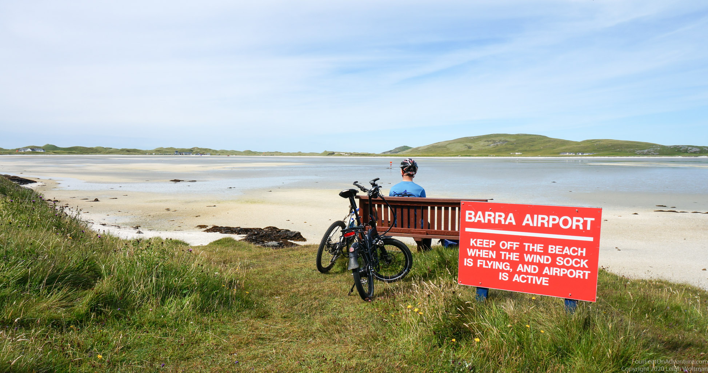
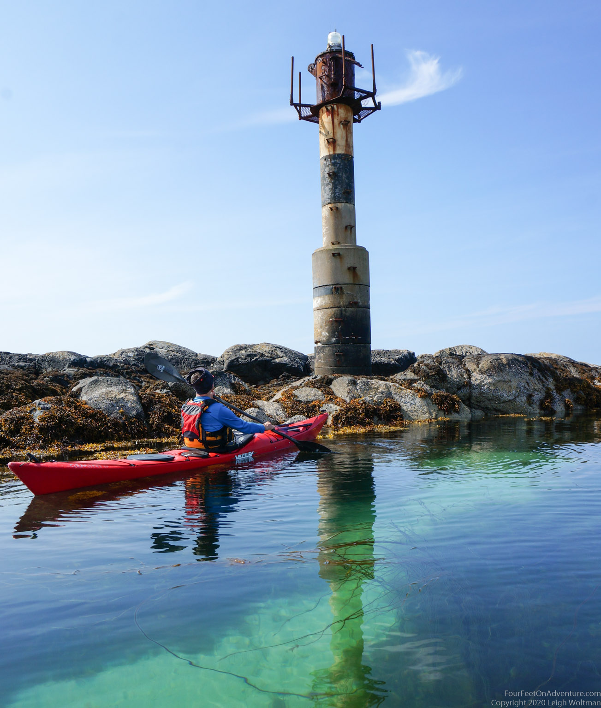

Eriskay and Barra
Finally time to explore the Western Isles. After a long and wet drive to and through Skye, we took the ferry to Lochmaddy on North Uist, drove through the isle of Benbecula to South Uist where we stayed overnight. The next morning, in vacation mode, it was time to explore the beach of Eriskay. This island, just south of South Uist, has a beautiful beach right next to the ferry to Barra. It was the most amazing weather, so warm that you could lie on the beach and not be cold. Almost little wind as well. It was tempting to go in the water, it looked as if you were on a Thai beach with clear white sand and light blue water. With a bit of imagination it could have been a Thai beach on a very cold Thai day. But oh man, the water was temperature had absolutely no resemblance with Thai ocean water, it was freezing cold! One woman in bathing suit went in there knee deep, but others were wearing wetsuits. Luckly, we brought one, so that Annette could go for a swim. It resulted in a brain freeze and she didn’t stay too long as her limbs were getting senseless, but still so beautiful and clear underwater that it was definitely worth it. Next time a better wetsuit, and maybe a snorkel set! A run back to Leigh in the wetsuit had her unfreeze a bit.

After a relaxing day we made dinner on the beach, then went for a little hike to one of Eriskay’s freshwater lakes, a bit higher up in the middle of the island, to pitch our tent. This was about a 2 km hike, as Eriskay is a small island. This turned out to be a beautiful spot, which was also known by the midges, small biting flies, who visited us in large quantities. We refined our tent policy, so that once in the tent, everything else happened through a very small hole to minimize midge-entry risk. It still was very calm and sunny, but the midges kept us in the tent.
The next morning, we needed to get going early for the ferry, which means the midges were still about. We had to wear midge nets to keep sane.

packed some stuff, got our bikes, and took the ferry to Barra.

This island has a 20 km road around, so we took the day to check it out, and then the last ferry back. And what a lovely island it is, especially when it’s nice and sunny. It is described as being all of the Western Isles in one island, and I would agree with that. Hills, bog, almost no trees, cute little houses, harbours, rugged coast friendly people and not to forget the beautiful beaches.

What a day. Castlebay is the main village, at the end of a bay with an island with a castle on it. This village was a major herring port at some point, but now is a cute place where ferry’s land. And, to us it’s famous for being the start of a massive hill if you bike it counter clockwise.
Back at our road to the ferry, we kept going north a little bit longer, and found Barra airport, where we saw a plane land on the wet sand.
This airport is the only one in the world with scheduled flights to a tidal beach.

That evening, we packed the kayaks and paddled to a beach we had scouted the day before. We had the entire beach to ourselves, and set up camp right there.

Annette couldn’t resist a swim, until Leigh shouted that the bugs found him and it was time to put some clothes back on and find his bug net. This turned out the night with the worst midge invasion. The vicious animals seemingly attempted to break down the tent to get us. We got quite nervous when we discovered a hole in the zipper, but luckily they didn’t.
Our paddle back the next day was another gift, amazing weather again!
